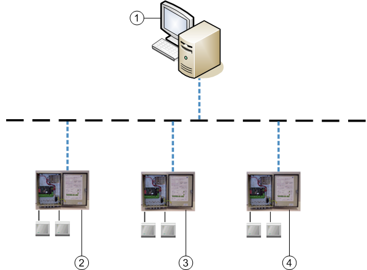

SIPORT System Architecture
SIPORT door controllers can communicate with the management station over the Modbus TCP protocol.

Item | Description |
1 | Management station |
2 | SIPORT Door controller |
3 | SIPORT Door controller |
4 | SIPORT Door controller |
| Ethernet |
| Modbus TCP |